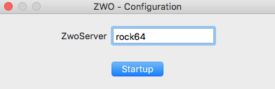

ZWO-Server Software Documentation
Version 1-beta
Christoph C. Birk (birk AT carnegiescience DOT edu)
Location of this document:
http://instrumentation.obs.carnegiescience.edu/Software/ZWO/zwoserver.html
News
ZwoServer protocol
Software Documentation
Zwo-Finder
News

- v0023 (2020-08-21)
- Added 'bitDepth' to support the new ASI-6200 camera. While all cameras
send 16 bit data, the other cameras only use 12 bits.
- Download zwo0023.tar.gz
- Please note that the ASI-6200 requires a newer version of the
libASICamera2.so library (at least 1.15.0617) from
ZWO
(--> ForDevelopers).
- v0020 (2019-08-08)
- Added "gain" and "offset" commands
- This is the minimum version required for operation with the CASCA scheduler (v0016).
- v0015 (2019-07-17)
- Report cooler and color when requesting
ASIGetCameraProperty or sending the "open" command.
- Requires ZwoFinder-v0027.
ZwoServer Command Protocol
- Connect to the zwoserver via "nc" (or netcat or similar)
- nc rpi 52311
Protocol:
All commands have to be terminated by a [LF] character (ASCII: 0x0a)
All responses will be terminated by a [LF] (except binary image data).
- Command: version
- Returns the version string, a cookie and the startup-time of the server.
- Command: open
- Opens the USB connection to the camera - does nothing if already connected.
- Returns the chip geometry, cooler and color availability, examples:
- "1936 1096 0 1" : no cooler, color (ASI290MC)
- "4656 3520 1 0" : has cooler, monochrome (ASI1600MM)
- Command: setup [ x y w h b p ]
- Returns the current setup or changes the readout geometry
(example "0 0 4656 3520 1 8")
- [x y w h] : window geometry
- [b] : binning {1,2,4}
- [p] : bits-per-pixel {8,16,24}
- The values for 'x y w h b p' are stored to disk.
- Command: setup default
- The values stored via the last 'setup x y w h b p' are loaded.
- Command: setup image [ b ]
- same as "setup 0 0 4656 3520 1 16" -- the optional 'b' parameter overwrites the binning
- Command: setup video [ b ]
- same as "setup 0 0 4656 3520 1 8" -- the optional 'b' parameter overwrites the binning
- Command: exptime [ # ]
- Sets the exposure time in seconds {0.0001 .. 30.0}
- Command: gain [#]
- Set the CCD gain (0..600)
-
- Command: offset [#]
- Set the CCD offset (0..100)
-
- Command: expose
- Starts an exposure. A return value of "0" signifies sucess.
Any error will start with "-E".
- Command: status
- Returns the current server status:
- "closed" : the connection the the USB camera is closed.
- "idle" : conneced to the USB camera;
no exposure or video stream is active.
- "exposing #" : exposure is running (for # seconds).
- "streaming" : streaming video from the camera.
- Command: data [ # ]
- Readout the image data (exposure or video) and send it as binary data.
- The optional parameter limits the number of binary data bytes beeing
sent ('0' allows to omit sending binary data for testing).
- Returns the number of bytes in the image, followed by the binary data.
- Command: start
- Start video streaming from the camera.
- The images may be transmitted via the "data" command.
- Command: stop
- Stop video streaming.
- Command: write [ # ]
- Writes the current image (exposure or video) to disk as
$HOME/zwo0000.fits
- the '0000' number is incremented after each 'write' command.
- '#' sets the file number.
- Command: close
- Closes the connection to the USB camera.
- Note: "close" is implicit when the network connection is terminated.
- Command: tempcon [ # ]
- Set the temperature control setpoint;
"off" turns off the temperature control.
- Without parameter it returns the temperature and cooler percentage.
- Example: "0.0 25"
- Command: filters
- Returns the number of positions on the filter wheel.
- If no filter wheel is connected the return is "0".
- Note: Must be called before the wheel can be moved.
- Command: filter [ # ]
- Move the filter wheel to position '#' (the index is '0' based).
- Return: "0" (move accepted)
- Without parameter it returns the current filter
wheel position or "-1" for "moving".
-
-
-
Software Documentation
Driver -
Server -
ZwoFinder
HowTo setup a RaspberryPi (ARMv7) / Rock64 (ARMv8) / Minnow (x86_64)
- Install the ASI library:
(get the latest version from the ZWO
webpage
--> ForDevelopers)
- sudo cp libASICamera2.so.1.13.0930 /usr/local/lib/libASICamera2.so
- sudo install asi.rules /lib/udev/rules.d
- and reconnect the camera, then the camera can be opened as non-root.
- Run 'cat /sys/module/usbcore/parameters/usbfs_memory_mb' to make sure the result is 200
- Install the EFW library:
(get the latest version from the ZWO
webpage
--> ForDevelopers)
- sudo cp libEFWFilter.so.0.3.1205 /usr/local/lib/libEFWFilter.so
- sudo install efw.rules /lib/udev/rules.d
- and reconnect filter wheel, then filter wheel can be opened as non-root.
-
-
HowTo compile/make the 'zwoserver'
- tar xf zwo0010.tar.gz
- cd src
- make zwoserver
- ./zwoserver
- The screen output should be something like
- ZwoServer-0.010
- Feb 25 20:28:29: ZwoServer-v0.010: UT= 20:28.29 LT=hh:mm:ss
- run_tcpip(52311)
- indicating that the ZwoServer is running and listening to port 52311
Please ignore the 'zwogui' in this distribution, as it is not functional.
HowTo connect the ZWO-Finder' GUI to the 'zwoserver'

Enter the IP-number or hostname of the computer running the 'zwoserver'.
If you leave the hostname empty, the GUI will try to connect to the
ZWO-camera connected to a local USB port.
ZWO-Finder documentation.
Christoph C. Birk,
2019-02-14, Carnegie Observatories